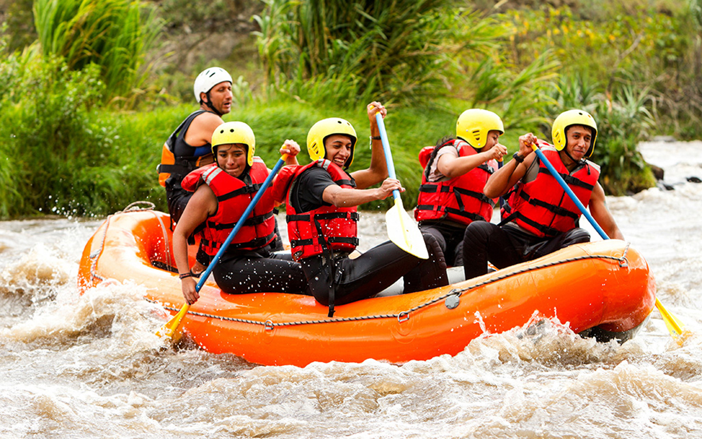
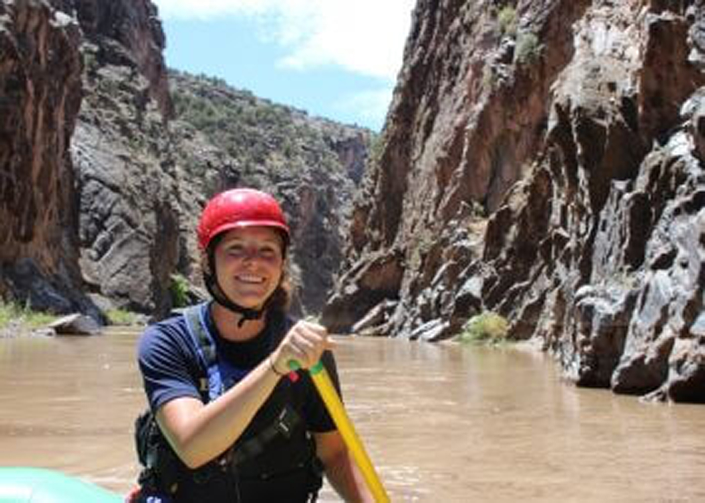

The memories of the amount of adventures we get live with us till eternity


White Water Rafting
History
White Water Rafting is the Buena Vista white water rafting outfitter since 1976. Known for providing thrilling river rafting experiences on five different rivers throughout the state. With 47+ years of expertise in water raftingColorado and extensive knowledge of the area’s waterways, We have become a trusted provider of unforgettable rafting trips. Whether you’re a seasoned rafter or a first-time adventurer, Wilderness Aware offers a range of options for Colorado white water rafting. Join us for an experience of a lifetime and discover the beauty and excitement of Buena Vista white water rafting.